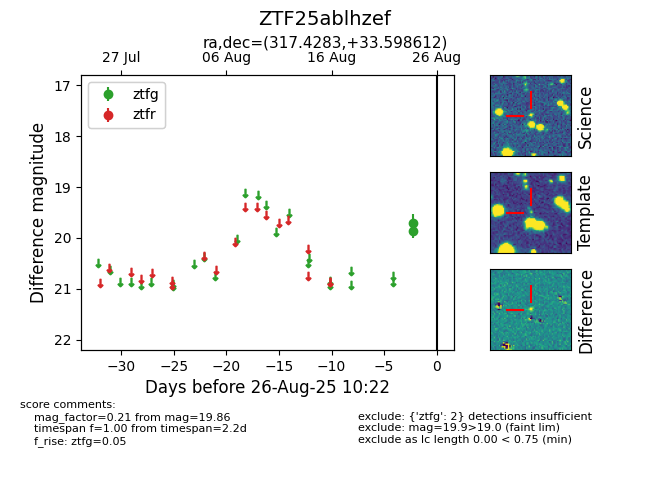

FINK: ZTF25ablhzef
Lasair: ZTF25ablhzef
ALeRCE: ZTF25ablhzef
ZTF25ablhzef (ztf,fink)
equatorial (ra, dec) = (317.4283,+33.59861)
galactic (l, b) = (78.8410,-9.68799)

last ztfg=19.86
2 ztfg detections